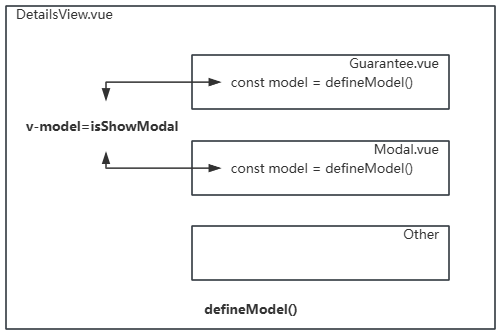
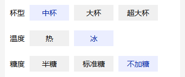
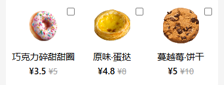

const model = defineModel()
const model = defineModel({type: Number, default: 0 })
<Model v-model ="count" />
const num = defineModel('num')
const num = defineModel('num', { type: Number, default: 0 })
<Model v-model:num ="count" />
const first = defineModel('first')
const last = defineModel('last')
<input type="text" v-model="first"> <input type="text" v-model="last">
let user = ref({
first: 'gl',
last: 'cn'
})
<Model v-model:first="user.first" v-model:last="user.last" />
const props = defineProps({
modelValue: Number
})
const emit = defineEmits(['update:modelValue'])
const incLike = () => {
emit('update:modelValue', props.modelValue + 1)
}
<div @click="incLike"><span class="fa fa-heart"></span> {{ modelValue }}</div>
let msg = ref(0)
<List v-model="msg"></List>
<List v-model:msg="msg" v-model:tips="tips"></List>
const props = defineProps(['msg', 'tips']) const emits = defineEmits(['update:msg', 'update:tips'])
<input type="text" :value="msg" @input="$emit('update:msg', $event.target.value)">
<input type="text" :value="tips" @input="$emit('update:tips', $event.target.value)">
<div class="guarantee"> <div>guarantee</div> <button @click="model = true">show</button> </div>
const model = defineModel()
<div class="modal"> <div>modal</div> <button @click="model = false">close</button> </div>
const model = defineModel()
<Guarantee v-model="isShowModal"></Guarantee> <Modal v-model="isShowModal" v-show="isShowModal"></Modal>
import { ref } from 'vue';
import Guarantee from '@/components/Guarantee.vue';
import Modal from '@/components/Modal.vue';
const isShowModal = ref(false);

<div class="specification">
<span>{{ item.label }}</span>
<label class="specification-item" v-for="option in item.options" :key="option.id">
<input type="radio" :name="item.name" :value="option.label" v-model="model" hidden>
<span>{{ option.label }}</span>
</label>
</div>
const model = defineModel()
const props = defineProps({
item: {
type: Object,
default: {}
}
})
{
"id": 101,
"label": "杯型",
"name": "cup",
"options": [
{ "id": 1, "label": "中杯", "value": "中杯", "sel": true },
{ "id": 2, "label": "大杯", "value": "大杯", "sel": false },
{ "id": 3, "label": "超大杯", "value": "超大杯", "sel": false }
]
}

详情页规格组件效果
const props = defineProps(['dessert'])
const dessertSelected = defineModel('dessertSelected', { default: [] })
<div class="reco-dessert">
<div class="item" v-for="(item, ind) in dessert" :key="item.id">
<input class="cb" type="checkbox" name="dessert" :id="item.id" :value="item.title" v-model="dessertSelected">
<label :for="item.id">
<img class="img" :src="`https://glpla.github.io/utils/${item.img}`" alt="">
<p>{{ item.title }}</p>
<div class="price">¥{{ item.priceOrignal }}</div>
</label>
</div>
</div>
import RecoDessert from '@/components/RecoDessert.vue';
// 商品数据
const goods = ref({})
// 选择的商品数据
const goodsSelected = ref({
// ...
dessert: []
})
<RecoDessert :dessert="goods.dessert" v-model:dessertSelected="goodsSelected.dessert" />
详情页甜点组件效果